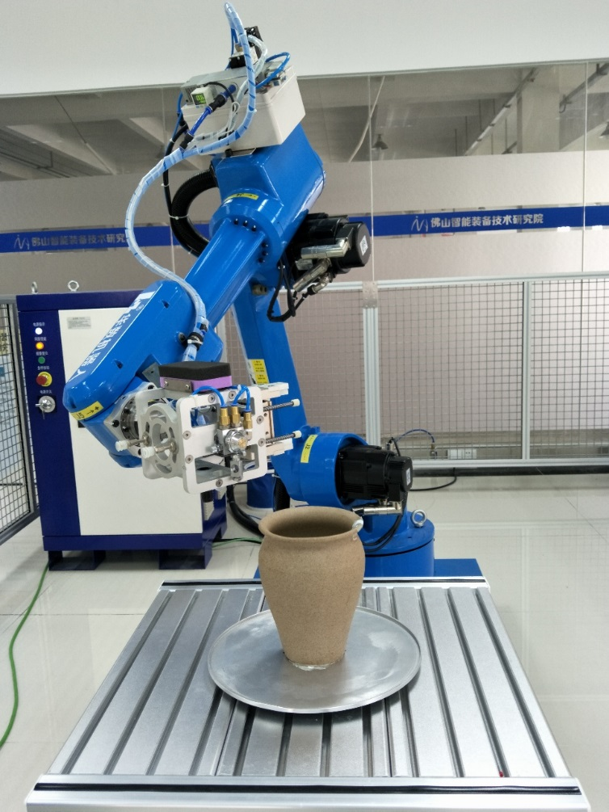

喷漆编程与操作
项目描述
喷漆是产品生产过程的一个重要工序，它是利用压缩空气将油漆通过喷枪喷到产品坯体上，喷漆时喷枪与坯体的距离、角度、喷枪移动速度等决定了喷漆的质量，这就对操作工人提出了很高的要求，另外油漆粉尘对操作工人也十分有害。因此采用机器人代替人工喷漆是个很好的选择。喷漆机器人有很多优点：能大大提高工作效率，减轻工人劳动强度，保障工人身体安全；能够适应现场的高温，高湿，多粉尘的恶略环境。
本项目利用HSR-JR612机器人对工件进行喷漆。机器人的作用是控制喷枪，使之在喷涂过程中与喷涂表面保持正确的角度和恒定的距离。通过本章的学习，使大家学会工业机器人的喷漆应用。学会工业机器人的喷漆程序的编写技巧。
项目目标
●掌握工业机器人喷涂运动的特点及程序编制方法；
●能使用工业机器人基本指令正确编制喷漆控制程序。
知识目标
◆掌握圆弧运动控制程序的指令格式，编程方法；
◆掌握寄存器R指令、标签指令LB、条件指令IF、跳转指令JMP的指令格式、编程及应用。
能力目标
◆能够熟练应用圆弧运动指令编制直线轨迹程序；
◆能够熟练应用R、PR、LB、IF、JMP指令编制程序；
◆能够完成喷漆运动的示教。
任务描述
该喷漆机器人单元主要由一台工业机器人、一套工作台、一套喷漆装置、一工作间（直接把机器人和工作台安装在其内）及一套电气控制系统组成，主要结构如图4-1所示。
工件放在工作台上，通过定位固定位置；机器人带动喷漆装置进行喷漆。机器人完成工件一面的喷涂后，通过外部轴将工件旋转90°，再进行喷涂，从而完成四个面的喷涂。完成所有面的喷涂后机器人回零位，人工进行工件的收取和摆放。

图4-1 喷漆结构示意图